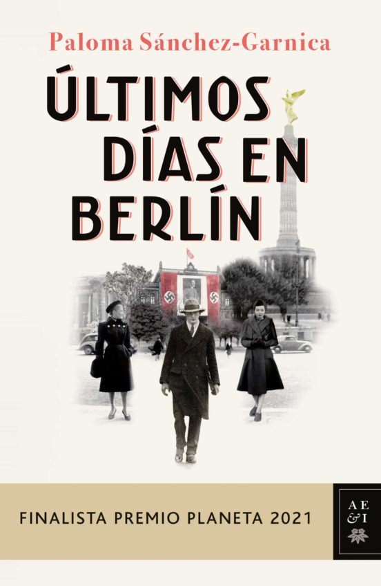

100 años de soledad
Gabriel García Márquez
Cien años de soledad trata un siglo en la vida de la familia Buendía, cuyo patriarca, José Arcadio Buendía, fundó el pueblo
ficticio de Macondo, en Colombia. La novela es considerada una obra maestra de la literatura latinoamericana y uno de los
ejemplos clásicos del realismo mágico.
Las crónicas de Narnia. El león, la bruja y el armario
Gemma Gallart
Narnia…, un mundo congelado…, una tierra que aguarda su liberación. Cuatro niños descubren un armario que les sirve de
puerta de acceso a Narnia, un país congelado en un invierno eterno y sin Navidad. Entonces, cumpliendo con las viejas
profecías, los niños —junto con el león Aslan—serán los encargados de liberar al reino de la tiranía de la Bruja Blanca
y recuperar el verano, la luz y la alegría para todos los habitantes de Narnia.
El amor en los tiempos de cólera
Gabriel García Márquez
La historia de amor entre Fermina Daza y Florentino Ariza, en el escenario de un pueblecito portuario del Caribe y a lo
largo de más de sesenta años, podría parecer un melodrama de amantes contrariados que al final vencen por la gracia del
tiempo y la fuerza de sus propios sentimientos, ya que García Márquez se complace en utilizar los más clásicos recursos
de los folletines tradicionales. Pero este tiempo -por una vez sucesivo, y no circular-, este escenario y estos personajes
son como una mezcla tropical de plantas y arcillas que la mano del maestro modela y fantasea a su placer, para al final ir
a desembocar en los territorios del mito y la leyenda. Los zumos, olores y sabores del trópico alimentan una prosa
alucinatoria que en esta ocasión llega al puerto oscilante del final feliz. «Era inevitable: el olor de las almendras
amargas le recordaba siempre el destino de los amores contrariados.
Ana Karenína
Lev N. Tolstói
Entre los grandes escritores del siglo XIX, Lev Nicoláievich Tolstói (1828-1910) ha sido calificado como genio único, sin
equivalente en ningún otro país. Hijo de un acaudalado terrateniente que le dejó una fortuna inmensa, se lanzó por la vía
de la disipación hasta que su participación como oficial durante la guerra de Crimea le hizo volverse hacia unos valores
humanistas y continuar una vocación literaria en la que ya se había iniciado antes de la guerra. El cambio afectó a sus
convicciones espirituales más íntimas y desembocaría, al final de su vida, en una crisis moral y religiosa que derivó hacia
un cristianismo evangélico radical. Al comienzo de esta etapa escribe Ana Karenina, en la que Tolstói refleja su visión de
la sociedad urbana, símbolo de los vicios y el pecado, en oposición a la vida sana de la naturaleza y del campo.
De ese mundo necio y patológico de la ciudad es víctima Ana Karenina, que se ha convertido en una figura clave de la
literatura universal.
El diario de Ana Frank
Ana Frank
Esta es la edición definitiva del célebre Diario de Anne Frank. Su texto amplía en una cuarta parte las ediciones anteriores
y ofrece una visión completa y fidedigna de la terrible odisea vivida durante la Segunda Guerra Mundial por la familia Frank
Un testimonio único sobre el horror y la barbarie nazi, y sobre los sentimientos y experiencias que vivió una niña judía
recluida con su familia para huir del Holocausto
Tras la invasión de Holanda, los Frank, comerciantes judíos alemanes emigrados a Amsterdam en 1933, se ocultaron de la
Gestapo en una buhardilla anexa al edificio donde el padre de Anne tenía sus oficinas. Eran ocho personas y permanecieron
recluidas desde junio de 1942 hasta agosto de 1944, fecha en que fueron detenidas y enviadas a campos de concentración.
En ese lugar y en las más precarias condiciones, Anne, a la sazón una niña de trece años, escribió su estremecedor Diario:
un testimonio único en su género sobre el horror y la barbarie nazi, y sobre los sentimientos y experiencias de la propia
Anne y sus acompañantes. Anne murió en el campo de Bergen-Belsen en marzo de 1945. Su Diario nunca morirá.
De entre los muchos que, a lo largo de la historia, han hablado en nombre de la dignidad humana en tiempos de sufrimiento
y muerte, no hay ninguna voz que tenga más peso que la de Anne Frank.

Últimos días en Berlín
Paloma Sánchez-Garnica
Tras huir de San Petersburgo debido a las desastrosas consecuencias de la revolución de Octubre, Yuri Santacruz es testigo
del ascenso de Hitler e incluso llega a asistir al nombramiento de éste como canciller de Alemania. Imposible es, para él,
en esos días de gloria y esperanza por el futuro, imaginar la deriva del régimen nazi y las terribles consecuencias de la
llegada al poder de Adolf Hitler. Solo en el país, alejado de su madre y su pequeño hermano, retenido por las autoridades
rusas en su patria, Yuri tendrá que lidiar con todas estas incertidumbres mientras lucha por sobrevivir y reunir a su familia.
Pero el ambiente político y social de Alemania no se lo pone fácil: Yuri se ve metido de lleno en un conflicto con las
autoridades alemanas al defender a un joven comunista que estaba siendo agredido por las tropas de asalto del führer.
Todo ocurre el mismo día que conoce a Claudia, una joven de la que queda absolutamente enamorado.
Con todos esos mimbres, Paloma Sánchez-Garnica construye una vida, la de Yuri Santacruz, que da un giro de 180 grados
tras esos acontecimientos. El objetivo no será ahora rescatar a su madre y a su hermano de las garras comunistas, sino
escapar del horror nazi y seguir con vida un día más.
La escritora ha conseguido construir una novela emocionante, frenética y que permite a los lectores hacer un documentado y
realista viaje en el tiempo de la mano de unos personajes bien construidos y verídicos.
Considerada por la crítica como «una delicia narrativa», Últimos días en Berlín es una muestra más del talento de la
escritora y un claro posicionamiento de esta ante los regímenes totalitarios, que hicieron muy difícil la vida del pueblo llano.
Yuri es tan solo un nombre que enmascara el de cientos de miles de personas que vieron cómo el edificio de sus vidas se
desmoronaba ante el ascenso de los totalitarismos en Europa. El mosaico de personajes, que son protagonistas de interesantes
diálogos sobre los que se construye la novela, no hace más que reforzar un trabajo brillante que ha merecido ser finalista en
narrativa del premio Planeta 2021, uno de los más importantes de nuestro país.
Crimen y castigo
Fiódor Dostoyevski
Los mejores libros jamás escritos Considerada por la crítica como la primera obra maestra de Dostoievski, Crimen y castigo
es un profundo análisis psicológico de su protagonista, el joven estudiante Raskólnikov, cuya firme creencia en que los fines
humanitarios justifican la maldad le conduce al asesinato de una usurera. Pero, desde que comete el crimen, la culpabilidad
será una pesadilla constante con la que el estudiante será incapaz de convivir. La presente edición de una de las obras más
importantes de la literatura universal cuenta con la célebre traducción de Rafael Cansinos Assens, revisada y modernizada para
la ocasión. Asimismo, viene acompañada de una introducción de David McDuff, traductor y crítico literario especialista en la
obra del autor. La mentira es el único privilegio del hombre sobre todos los demás animales.
Un mundo feliz
Aldous Huxley
Un mundo feliz es un clásico de la literatura del siglo XX, una sombría metáfora de un futuro posible.
La novela describe un mundo en el que finalmente se han cumplido los peores vaticinios del capitalismo:
triunfan los dioses del consumo y la comodidad, y el orbe se divide en diez zonas en apariencia seguras y estables. Sin
embargo, se han sacrificado valores humanos esenciales, y los habitantes se crean in vitro con una técnica concebida a
imagen y semejanza de una cadena de montaje.
Harry Potter y la piedra filosofal
J.K. Rowling
Harry Potter nunca ha oído hablar de Hogwarts hasta que empiezan a caer cartas en el felpudo del número 4 de Privet Drive.
Llevan la dirección escrita con tinta verde en un sobre de pergamino amarillento con un sello de lacre púrpura, y sus
horripilantes tíos se apresuran a confiscarlas. Más tarde, el día que Harry cumple once años, Rubeus Hagrid, un hombre
gigantesco cuyos ojos brillan como escarabajos negros, irrumpe con una noticia extraordinaria: Harry Potter es un mago,
y le han concedido una plaza en el Colegio Hogwarts de Magia y Hechicería. ¡Está a punto de comenzar una
aventura increíble!

Historia de dos ciudades
Charles Dickens
Con las ilustraciones originales de Phiz, una obra de Dickens oportunamente rescatada para el Bicentenario del autor.
Una buena ocasión para descubrir por qué Mark Twain decía leer esta novela una vez cada dos años? por lo menos.
El Londres pacífico pero grotesco del rey Jorge III y el París clamoroso y ensangrentado de la Revolución Francesa
son las dos ciudades sobre cuyo fondo se escribe esta inolvidable historia de intriga apasionante. Violentas escenas de masas,
estallidos de hambre y venganza, espías y conspiradores, héroes fracasados y héroes a su pesar se mezclan en una trama
artística y perfecta, llena de sorpresas y magistralmente elaborada por un Dickens
en uno de sus mejores momentos creativos.
El Principito
Antoine de Saint-Exupéry
Fábula mítica y relato filosófico que interroga acerca de la relación del ser humano con su prójimo y con el mundo, El Principito concentra, con maravillosa simplicidad, la constante reflexión de Saint-Exupéry sobre la amistad, el amor, la responsabilidad y el sentido de la vida.
Viví así, solo, sin nadie con quien hablar verdaderamente, hasta que tuve una avería en el desierto del Sahara, hace seis años. Algo se había roto en mi motor. Y como no tenía conmigo ni mecánico ni pasajeros, me dispuse a realizar, solo, una reparación difícil. Era, para mí, cuestión de vida o muerte. Tenía agua apenas para ocho días.
La primera noche dormí sobre la arena a mil millas de todatierra habitada. Estaba más aislado que un náufrago sobre una balsa en medio del océano. Imaginaos, pues, mi sorpresa cuando, al romper el día, me despertó una extraña vocecita que decía:
-Por favor..., ¡dibújame un cordero!
-¿Eh!?
-Dibújame un cordero...
El arte de la guerra
Sun Tzul
Si conoces al enemigo y a ti mismo, tu victoria será segura; si conoces el Cielo y conoces la Tierra, puedes lograr
que tu victoria sea completa». El arte de la guerra es el más reconocido tratado de estrategia militar de todos los tiempos.
A pesar de haber sido escrito, presumiblemente, en el siglo V a.C., las ideas estipuladas por Sun Tzu mantienen plena vigencia
y actualidad, puesto que los trece capítulos que componen la presenta obra transmiten una sabiduría difícilmente superable.
Las enseñanzas de este libro son aplicables a todos aquellos ámbitos de la vida en los que los conflictos y las
contradicciones tienen un especial protagonismo, como la política, la economía, la filosofía, las leyes o la psicología,
entre otros, lo que lo convierte en un magnífico compendio de conocimiento de la naturaleza humana.
El despertar
Kate Chopin
Cuando Edna Pontellier, esposa de un hombre de negocios de Nueva Orleans, se desplaza junto con éste y sus dos hijos a
pasar las vacaciones estivales a Grand Isle, en la costa, traba conocimiento con un joven encantador, Robert Lebrun,
en el lugar donde se alojan. Su fugaz relación sentimental, sin embargo, movilizará dentro de ella unas hasta entonces
sofocadas ansias de libertad a las que empezará a dar forma: libertad para experimentar su vida alejándose de las numerosas
convenciones de toda clase que la sociedad le marca como mujer, libertad para encontrar su independencia, libertad para
explorar sus sentimientos y sensaciones. Edna acometerá este camino arduo y solitario, pero ¿permitirá la sociedad que
cumpla sus aspiraciones?
Cuentos de amor de locura y de muerte
Horacio Quiroga
La obra trata principalmente de la muerte, aunque toca otros como la humanización de los animales, éstos, quienes junto a un
pensamiento enteramente racional, dirigen las respectivas historias. Pero aunque los animales portan raciocinio, este
acaba con la fuerza bruta del hombre.
La naranja mecánica
Anthony Burgess
La naranja mecánica, publicada en 1962, sitúa la acción en el futuro cercano de la década de 1970. Burgess narra la
historia de cuatro adolescentes, o nadsats, tal como se llaman en la jerga creada por el autor. El protagonista,
Alex, y sus amigos, o drugos, viven en un mundo de crueldad y destrucción. Tras la brutal violación de la mujer de un
escritor, Alex es detenido y llevado a un centro de rehabilitación, donde será elegido para participar en un novedoso y
drástico experimento que pretende que aborrezca la violencia. Una vez reinsertado en la sociedad, el tratamiento tendrá
consecuencias impredecibles. La naranja mecánica fue llevada al cine con gran éxito por Stanley Kubrick.

El conde de montecristo
Alexandre Dumas
Grandes Clásicos Literatura Random House nos brinda esta magnífica edición de una novela de enorme poder de sugestión, a
través de la figura del hombre solitario que, tras sobrevivir a una vil traición, regresa para hacer justicia. El conde
de Montecristo es uno de los clásicos más populares de todos los tiempos. Desde su publicación, en 1844, no ha dejado de
seducir al gran público con la inolvidable historia de su protagonista.Edmond Dantés es un joven marinero, honrado y cándido,
que lleva una existencia tranquila. Quiere casarse con la hermosa Mercedes, pero su vida se verá arruinada
cuando su mejor amigo, Ferdinand, deseoso de conquistar a su prometida, le traicione vilmente. Condenado a cumplir una
condena que no merece en la siniestra prisión del castillo de If, Edmond vivirá una larga pesadilla de trece años.
Obsesionado por su inesperado destino, dejará de lado sus convicciones en torno al bien y al mal, y se dedicará a
tramar la venganza perfecta.Historia transida de densidad moral y cívica, El conde de Montecristo es, hoy como ayer,
una novela amena, iluminadora y fascinante en sus múltiples dimensiones.

El resplandor
Stephen King
Un clásico imprescindible del mejor novelista de terror.
REDRUM
Esa es la palabra que Danny había visto en el espejo. Y, aunque no sabía leer, entendió que era un mensaje
de horror.
Danny tenía cinco años, y a esa edad poco niños saben que los espejos invierten las imágenes y menos aún saben diferenciar
entre realidad y fantasía. Pero Danny tenía pruebas de que sus fantasías relacionadas con el resplandor del espejo acabarían
cumpliéndose: REDRUM... MURDER, asesinato.
Pero su padre necesitaba aquel trabajo en el hotel. Danny sabía que su madre pensaba en el divorcio y que su padre se
obsesionaba con algo muy malo, tan malo como la muerte y el suicidio. Sí, su padre necesitaba aceptar la propuesta de cuidar
de aquel hotel de lujo de más de cien habitaciones, aislado por la nieve durante seis meses. Hasta el deshielo iban a estar
solos. ¿Solos?...
La comunidad del anillo
J. R. R. Tolkien
Empieza tu viaje a la Tierra Media. Los libros que han inspirado la nueva serie EL SEÑOR DE LOS ANILLOS: LOS ANILLOS DEL PODER.
La primera entrega de la trilogía de J. R. R. Tolkien El Señor de los Anillos. En la adormecida e idílica Comarca, un joven
hobbit recibe un encargo: custodiar el Anillo Único y emprender el viaje para su destrucción en la Grieta del Destino.
Acompañado por magos, hombres, elfos y enanos, atravesará la Tierra Media y se internará en las sombras de Mordor, perseguido
siempre por las huestes de Sauron, el Señor Oscuro, dispuesto a recuperar su creación para establecer el dominio definitivo
del Mal. La obra de Tolkien, difundida en millones de ejemplares, traducida a docenas de lenguas, inspiradora de slogans
pintados en las paredes de Nueva York y de Buenos Aires... una coherente mitología de una autenticidad universal creada en
pleno siglo veinte. George Steiner, Le Monde, 1973.